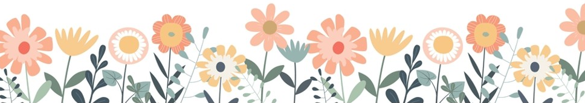
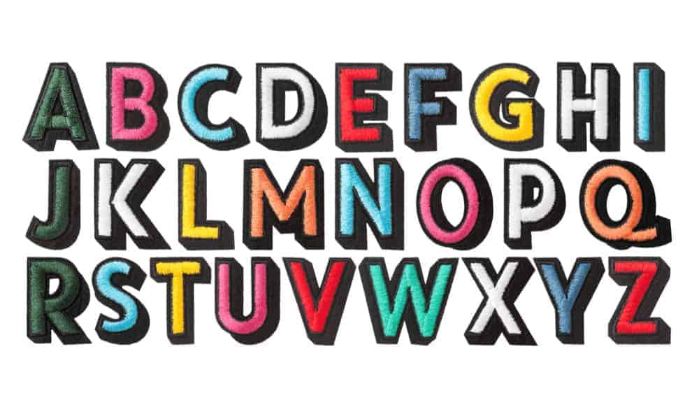

Creative Programming: Interaction
Lecture 4 (17 Feb)
(Re)visiting slides?
You can jump to any slide with the menu to the (bottom) left.
Did you miss a slide or want to revisit? Open the narration tab while studying to get an explanation of difficult slides.

Course improvements
- Thank you for your feedback!
- We have had the fundamentals so we will have more time on practicing in class
- There is now a coding reference on GitHub with details on what we have covered so far
Angle recap
Push & Pop
- Properties like
fill()andstroke()affects all subsequent shapes push()andpop()allow us to save and restore the current drawing state- Any changes you make between
push()andpop()will not affect the drawing state outside of that block
Straight angles
- If we just use
rect(), we can only get rectangles on straight angles - Without angled rectangles our flower sketch would look like this:
Translate
- In order to rotate we need to set the origin using
translate() translate(x, y)moves the origin to the specified (x, y) position- For a flower we would for example want to move the origin to the center
Rotate
- With our new origin we can now rotate our shapes using
rotate() rotate(angle)rotates the coordinate system by the specified angle- Make sure to use
angleMode(DEGREES)first if you want to use degrees
For-loop
- We can automate the drawing of multiple petals using a for-loop
- By rotating the coordinate system by a fixed angle in each iteration, we can create a circular pattern of petals
Flower!
Class Assignment: Flower!
- Create a flower sketch using
translate(),rotate(), and a for-loop to draw multiple petals - Can you make it so that you can quickly change the location (x,y) and number of petals?
- Can you make the petals spin using
frameCount?
The World of Functions
Shape functions
rect()andellipse()are examples of functions that draw shapes on the canvas- What if we want to repeatedly draw a custom shape?
Vertices
- We can define custom shapes with vertices
- Start and end your shape with
beginShape()andendShape(CLOSE) - Define every vertex with
vertex(x, y)
Repeatedly drawing shapes
- Vertex definitions take up a lot of space
- If we want to draw multiple shapes, we clutter the code quickly
- Solution: functions
Functions
- Functions are reusable blocks of code that perform a specific task
- They allow us to organize our code and avoid repetition
rect()andellipse()are examples of built-in functions, but we can also create our own custom functions!
Function syntax
- Functions have a name and take a list of parameters(inputs):
- In this above example,
(a, b, c)are the parameters of the function. These are essentially variables for within the function’s scope
Function calling
- We can now call the function like this:
- In this case, we are passing the values
1,2, and3as arguments to the function, which will be assigned to the parametersa,b, andcrespectively when the function is executed
Function return
- Functions can also return a value using the
returnkeyword - This allows us to use the output of a function in other parts of our code
- This example adds two numbers and returns the result. We can use this function like this:
Custom function
- Going back to our vertex example, we can move this code to a function
- If we use parameters, we can reuse the function to draw multiple shapes on different locations
Flowers and functions
- We can now use our custom function to draw multiple flowers on the canvas
- Move the flower drawing code to a function and use parameters to specify the location and number of petals
Flower forest
Class Assignment: Flower forest
- Move flower code from the previous assignment to a function
- Make it so that you can specify the location and number of petals as parameters
- Use this function to draw a flower forest with multiple flowers on the canvas
- Can you add more parameters? For example, can you specify the size of the flower or the colours?

Mouse
What we have seen so far
- We have used
mouseXandmouseYto make our sketches interactive - We also used
pmouseXandpmouseYto get the previous mouse position - Can we do more with the mouse?
Events
setup()is a built-in function that happens when the program starts- Some built-in functions are called automatically when certain events happen
- For example,
mousePressed()is called whenever the mouse is pressed - We can define our own
mousePressed()function to specify what should happen when the mouse is pressed
Mouse events
mousePressed(): called when the mouse button is pressedmouseReleased(): called when the mouse button is releasedmouseClicked(): called when the mouse button is clickedmouseMoved(): called when the mouse is movedmouseDragged(): called when the mouse is dragged (moved while down)mouseWheel(): called when the mouse wheel is scrolled.- End with
return false;to prevent page scrolling
- End with
Programming with mouse events
- Let us look at some of these events in action
Mouse event parameters
- Some mouse events also have parameters that provide additional information about the event
- For example, the
mouseWheel()event has an optionaleventparameter that contains information about the scroll amount and direction- The speed and direction of the scroll can be accessed with
event.delta
- The speed and direction of the scroll can be accessed with
- Check out the (p5.js) reference for more details on mouse events and their parameters
Easing
- Easing is a technique used to create smooth animations by gradually changing a value over time
- Instead of instantly changing a value to a new target, we can “ease” towards the new one
- Here we replace 10% of the location with the target location in each frame, which creates a smooth transition towards the target.
Easing example
In this example we ease a circle towards the mouse position. The circle will smoothly follow the mouse around the canvas.
Mousing around
Class Assignment: Mousing around
- Create an interactive sketch, or modify a previous one, with two different mouse events
- Experiment with the parameters of the mouse events to create interesting interactions
- Can you make the mouse wheel change the size of things in your sketch?
Keyboard
Keyboard events
- Similar to mouse events, there are also keyboard events that we can use to make our sketches interactive
keyPressed(): called when a key is pressedkeyReleased(): called when a key is releasedkeyTyped(): called when a key is typed (pressed and released)- These events update
keyandkeyCode, two variables that contain information about the key that was pressed - Check out the (p5.js) reference for more details on keyboard events and their parameters
Key and keyCode
keycontains the value of the key that was pressed as a string. For example, if you press the ‘a’ key,keywill be ‘a’keyCodecontains the numeric code of the key that was pressed. For example, the ‘a’ key has a keyCode of 65- Some keys have variables that hold their keycodes, such as
SPACE,ENTER, andLEFT_ARROW.
- Some keys have variables that hold their keycodes, such as
Key example
- In the snippet below we check whether the ‘a’ key, space bar, or left arrow key is pressed and do something in each case
function keyPressed() {
if (key === 'a') {
// Do something when the 'a' key is pressed
} else if (keyCode === 32) { // We could have also used SPACE instead of 32
// Do something when the space bar (keyCode 32) is pressed
} else if (keyCode === LEFT_ARROW) {
// Do something when the left arrow key is pressed
}
}A useful snippet
- We prefer using
keyfor letter keys andkeyCodefor special keys - With a small tool, though, we can find the keycode for any key
Programming with keyboard events
- Let us look at some of these events in action
Key controls
- One of the most common uses of keyboard input is to control an object
- In this example, we can move the ball with the arrow keys
Alphabet
Class Assignment: Alphabet
- Create a sketch that responds to keyboard input by displaying the
keyvariable on the canvas - Make an array with the letters of the alphabet (or another word). Make it so the user has to type the letters in the correct order.
- Can you make it so that the user has to type the letters in reverse order? Or in a random order?


Creative Programming 2026 Lecture 4 - Ties Robroek - IT University of Copenhagen